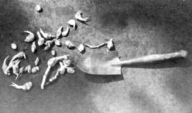
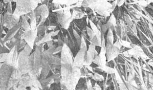
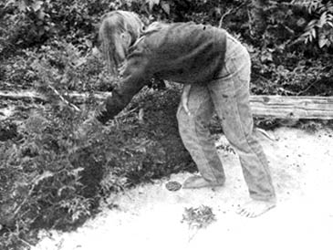

After an evening meal of fresh lake trout, cattail biscuits, arrowhead vegetable and raspberry dessert, my son and I took the canoe-leaving my wife and daughter to their own pursuits-and crossed the 150 yards of Ranger Lake that lay between our island and the mainland. We were going to cruise quietly along the shore in hopes of seeing a moose. If we were lucky we might even get a picture.
Nearing a "bay"-which we found out later was a creek-we heard some commotion in the thick aspen and evergreens. Suddenly a white tail buck bolted straight up the almost vertical hill that was the bank of Ranger Lake at this point and we smiled at each other in delight at seeing a familiar Wisconsin animal here in Canada. The noise coming from the bush didn't stop, however. It wasn't the deer that had made it. Paddling very softly forward we could detect a crunching; chewing sound coming from the base of a large aspen. Suddenly the tree dropped into the lake with a tremendous splash and water shot high into the air. We had witnessed a very rare sight: A tree actually falling that a beaver had cut. This more than made up for us not seeing any moose on the entire trip.
We had arrived at the island on which we pitched our camp by traveling through the Upper Peninsula of Michigan, crossing the International Bridge at Sault St. Marie and driving our small, low clearance auto right up to the lake via Ranger Lake road.
Now, the Ranger Lake road may not be the best highway in the world, but it was surely one of the better wild plant foraging trails early this fall. There was acre after acre of large sweet blueberries, patch after patch of raspberries, huge sweet-tasting dew berries and many choke-cherry trees with the largest choke cherries I had ever seen. Cattails grew in hundreds of pot-holes along the road, arrowhead root was abundant, white pond lilies were everywhere and though we didn't fish them, many trout streams tumbled through the hills and gorges of the route.
We stopped a couple times on the way in and filled our pans with berries against the possibility that they would be scarce where we planned to camp. At Ranger Lake itself I noticed dandelions, thistle and plantain right in the campground but didn't pick any. We were too anxious to get to the island.
A mountain of sleeping bags, tents, cameras, pots, pans and clothes was swiftly loaded into the canoe . . . but not so swiftly that I didn't notice the small smoke houses that are located at almost every permanent dwelling on Ranger Lake. I found out how they're made and used and I'll try to include the plans in another issue.
We launched our canoe from the Garden River campgrounds and, about eight miles north, stopped for a shore lunch. I made a semi-circle through the bush of the gravel bar where we were eating and found raspberries, the inevitable blueberries and a pin cherry tree. After lunch we continued on toward our planned destination: The junction of Ranger Lake and Saymo Lake, where our map showed a small island.
The vastness of this country keeps the uninitiated looking at the changing blues of the water, the towering greenness of the hills and the pink rock formations. Several times I had to speak to Jim, my son, to keep him from forgetting to stroke the bow paddle and our eight-year-old daughter kept up a solid commentary of "look at this" and "how did that happen" until my wife had to shush her.
In the back of my mind I envied the natives of this great territory with their possible diet of moose steaks, lake trout fillets and mountains of wild berries. I really wouldn't care if I got lost up here . . . for the summer at least. I did notice that it had dropped to 72° below zero one winter at a town nearby, though, so careful preparation would be in order for that season.
The next day we left our camp behind, canoed to the head of Ranger Lake and crossed on the portage to Saymo Lake. There is a fly-in or boat-in lodge there although we didn't see anyone around. An old wooden dam is located at the junction of the two lakes and it appears to have burned sometime in the past. Portaging was a welcome break after the paddling and, while the family stretched out on the bank, I took a walk through the adjoining bush. Here I saw blueberries, raspberries, choke cherries, pin cherries and dandelions.
A large brown mink kept coming from the jumble of timbers around the dam and staring at us as we left. He didn't appear to be afraid, which is unusual for a wild mink, and we didn't try to get too close as the possibilities of rabies always exists in animals. Paddling north on Saymo we saw a large island jutting up from the lake. On the southern shore of this island was a small, red log cabin. The lonely, washed place of beauty was deserted and we felt sad that the owner had left . . . for whatever reason.
We paddled around to the north side of the island and decided, then and there, to forage our lunch. While my wife and Jolain picked blueberries and Jim fished, I walked in from the beach for the rest of the meal. There was plenty of dandelion and plantain, more berries and cherries and, if I had been really hungry, there was a plentiful supply of poplar trees whose inner bark makes a vitamin-filled survival food. I had instructions from my wife to bring back just a wild green and a vegetable, however. That was going to be easy.
I quickly picked my fishing vest pockets full of plantain-selecting only the small, inner, perfect leaves-for the greens and when I broke through the dense forest of the island to the other shore I walked directly into a large patch of arrowhead. No better vegetable exists if my palate is the authority.
One hurdle in gathering arrowhead is finding the potato-like tubers in the mud and water from which they grow. Here I was fortunate. The plants were about 1-1/2 feet of water and the layer of mud underneath was thin.
Borrowing a method from the Indian squaws old, I took my shoes and socks off and waded into the patch barefoot. It was great fun squishing around in the cool mud for the tubers with both hands and both feet. I could feel the tubers in the mud and I tried to pull them loose without disturbing any plants. Even though this particular arrowhead patch was the very thin-leafed variety with small tube harvested enough for a meal in a very short time
A point or two of interest about this plant: A general rule, the larger the arrowhead the larger tuber growing underneath. Not all plants of family have arrowhead shaped leaves, either. The leaves are elliptical on some varieties and tongue-like on others and such plants have very small tubers.
When I returned to camp the ladies had blueberries and raspberries crushed together and sprinkled with sugar. If we had been home or had an oven available, my wife would have made blueberry pie to the following specifications.
To four cups fresh berries add 2/3 cup sugar, four tablespoons flour, two teaspoons quick cooking tapioca, 1-1/2 tablespoons lemon juice, 1/2 teaspoon cinnamon. Stir gently until well blended. Pour in pie crust, "dot" or distribute one tablespoon butter over blended berries. Let stand for 15 minutes. Cover with top crust and bake in 450° oven for ten minutes. Reduce heat to 350° and bake until crust is golden . . . about 40 minutes total baking time. This same recipe will make raspberry pie with the sugar increased to one cup.
Jim, the invincible fisherman, had caught a dandy lake trout on a Flashing Spoon. I had the vegetables and the girls had found dessert. In less than an hour we had foraged a good meal from this heavily forested island in the remote wilds of Canada.
I turned my attention to the arrowhead tubers first, filled a four quart pan partly full of lake water and gave them a good scrubbing. I used my knife, then, to scrape away the purple and loose skin. When this was done I washed the nodules thoroughly, covered them with water and sat the pan on the coals of the campfire. After it had boiled five minutes I drained this water and added a second. This was to eliminate the slightly sharp, bitter taste common to arrowhead. The pan went back on the coals to boil another two minutes, salt and pepper was added and-finally-the tubers were boiled three minutes more.
We sliced them then and dropped the slices in a pan of sputtering bacon grease my wife had ready. When they turned a golden brown we dipped the tubers onto the tin pie plates that we use for dishes when we are camping.
Another way I cook arrowhead is to peel and slice 1/2 cup of tuber, add 1/4 cup chopped wild onions and one cup of any meat or fish on hand. Boil vigorously for ten minutes, salt and pepper and let simmer for about one hour. This will serve one person in from the fields. Proportionally larger amounts will serve more.
Arrowhead tubers are pretty good raw also and they make a satisfying substitute for new potatoes in recipes such as this:
To make creamed tubers and milkweed pods, slice and peel the tubers and boil them until tender, changing the water once. Prepare an equal amount of milkweed pods by methods outlined in "Food Without Farming", MOTHER NO. 3. Now pour the water off the tubers, add one tablespoon butter, salt and cover with milk. Add the milkweed pods. Make a thickening of one tablespoon flour and enough water for a smooth paste. Stir the thickening into the milk and vegetables. Simmer until well cooked. Serve hot.
I had covered the plantain with cold water to soak clean while I worked on the arrowhead tubers. I now changed the water and swished the plantain around in a pan to clean it very well. Plantain always seems gritty to me if it's not soaked before cooking . . . but perhaps that's just a notion.
I started the water, boiled the plantain for about ten minutes, drained it and added a tablespoon of butter to the pint of greens. The butter was stirred in and salt and pepper added. The greens were ready.
In the meantime, Jim had cleaned the trout he caught and my wife had rolled the fillets in corn meal and fried them a beautiful brown. The meal was ready and we ate.
Whale we were enjoying our lunch a raft of poplar branches floated by, going directly upwind. It was a beaver floating dinner across the lake to his lodge. Foraging is good for everything in this wild country.
|
 |
 |
 |